自然双拼好处
双拼的好处 打字慢头疼?推荐个小技能,让速度提高很多! 启用输入法里的双拼输入法,选“自然码”方案,敲几天字竟这样快,真神奇!开始有点不习惯,但是坚持几天就习惯了。一星期下来速度如全拼或更快,惊讶!掌握它,手指飞,打字手不再痛。真是知道的太晚了。 就说一句话，大多数人，哪怕学过后打字速度比全拼还慢，他都不会回到全拼输入法。 双拼的种类很多，那为什么选自然了。 1，名字好听 2，普及度高，微软系统里带的就有 ，连微软和搜狗的双拼用的都和自然码的基本一样 3，同指双击低更舒适 4，后期可以升级，自然音形，和多种辅助码，就是打字不用选字，实现盲打。 双拼的原理是什么 比如说，你打“全拼”两个字，按键是quanpin 如果是双拼，按键那就是qrpn r键上有uan ， n键上有in 所以“全拼”双拼的打法就是qrpn 立刻就感觉键数少了很多 这里面提一下辅助码，比如你打“锝”字要找半天，那你如果用辅助码，那打dej 就立刻出现在第一位了。 j是金字旁的意思自然码双拼学习
那怎么学自然码双拼了 记忆力好的可以背码表，记忆力不好的可以按照我提供的方法学习。 1，在输入法设置中选择双拼输入法 在输入法设置里,选择“双拼输入”并选择“自然码”方案。初次使用会感觉不习惯和打字慢,但坚持几天后基本不难受,一周后达到全拼速度。 2，记忆力好的可以背码表 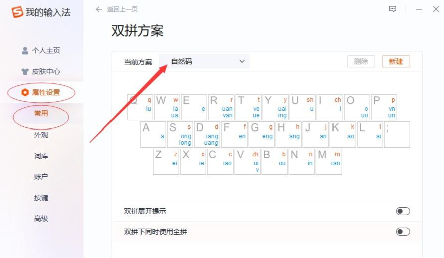 传统的学习方法，选择易记的“顺口溜”(可选) 可以选择一套易记的双拼“顺口溜”来帮助记忆,但实践使用更重要。 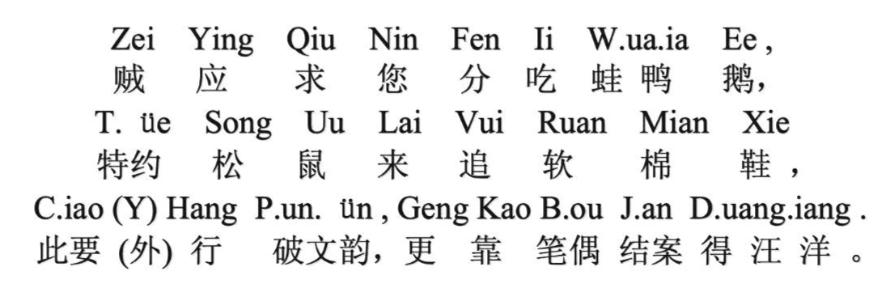自然码记忆口诀
你记忆力好可以背一下。但是不建议背。 注意单个字母“a”，啊，输入为“aa”。 零声母对应的打法 a aa o oo ang ah e ee eng eg 3，输入法助记皮肤，不用背（可选） 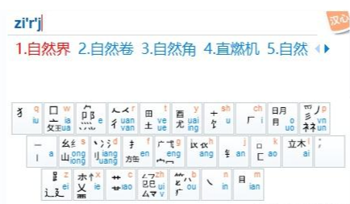 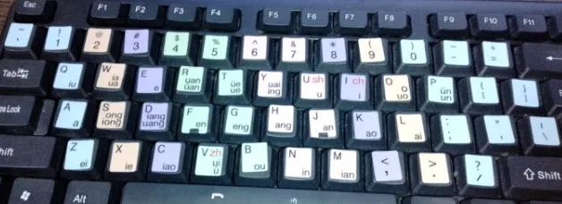 干货提供，上面网盘提供的电脑自然码皮肤，你边打边记。再也不用把键盘贴上纸字了。核心干货1，怎么样才能无痛苦学会双拼
这是我分享的核心绝招，因为很多人不喜欢背东西 那就是用手机配合带双拼的键盘打字用几天，你就能记住键盘字母位置了 重点-等你手机打的差不多了，你才上电脑打 手机下载讯飞输入法-设置-皮肤里搜索-自然码皮肤键盘 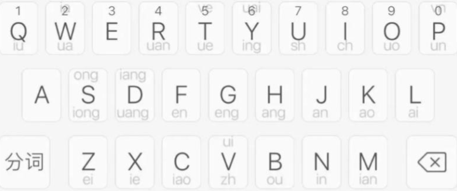 软键盘上有每个按键的韵母提示,易于记忆。无需换输入法,也可在按键旁标注韵母,也可以自己制作输入法皮肤后使用,用几天后不再需要了。 练习网站辅助学习(可选) 可以在双拼输入法练习网站api.ihint.me/shuang/上选择“自然码”方案练习,但重点还是实践使用。核心干货2，快速提高双拼打字速度强化训练(可选)
汉心双拼打字高级自定义强化型训练程序 电脑版点击上面，然后是一个，可以针对你不熟悉的键位，进行专门的强训。 这个是核心，每天练几遍哦，你会感觉学的很快，熟悉感更强。打字的速度也会更快。 以前他们学，都是打大量的文章，来适应，提高肌肉记忆。 现在我发现其实不用，就把你觉得不熟悉的，加强训练就可以了 全拼转双拼需要一定时间适应 全拼拼音和双拼拼法差异大,初期记住双拼方案键位对应,输入时会感慢和生疏,但持续使用几天后会逐渐适应。 多练习、边用边学 在聊天、文章或日常打字时多使用双拼输入法,边用边学,一两周后基本记住和适应。但是需要完全适应的话，得看你打的多不多。多的话，几天到几个星期。不多的话，需要几个月了。也看人，有些人就完全适应的就比较快。有些人就比较慢。 技巧，如果你用我前面提到的强化训练，几天就可以上手。可以快速摆脱，个别字的记不清混淆。自然码辅助码学习
辅助码是什么？ 你打拼音，不是经常要翻页选字吗。辅助码就是可以做到不用选字。 他的原理就是利用汉字的偏旁部首的读音作为形码 比如，踢，偏旁“足”这个字根在什么位置？肯定装z上。你打踢，多打一个形码z就可以不用选字了。这是就辅助码。 所以也有很多叫辅助码叫音形码。这个形是和读音对应的。这就不用像五笔那样背字根了。 提及一下自然码的历史，自然码80年代就有了。那个时候官方主要是作输入法软件，卖软件的。然后就是利用双拼＋形码的方式。然后当时好像需要花几百快买的。当时也有很多人买。可见自然码还是很好用的。后来有更多免费的好用的输入法出来。谁还愿意用收费的了。所以官方自然码就不更新了，官方自然码软件虽然不更新了。但是自然码双拼流行开了。很多输入法软件默认里是有自然码双拼。包括微软系统里也有。只是其他输入法软件只有纯双拼，基本没有辅助码。 我们说的音形和辅助码都是一个意思。他们就是打字不用选字的像五笔字根的一种东西。但是要比五笔字根容易学。 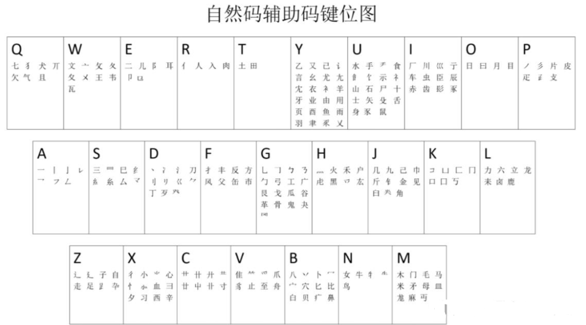 你咋一看，字根好多，那算了我还是不学了吧，背不掉。 但是你仔细看一下。其实，大部分字根都是和读音对应的。比如d上有很多点。t上有土和田。所以很多人也把它叫作音形码 这个还是很容易学的，那有些人说，还是有很多字根，不认得。找不到规律。那我推荐另一个类似的辅助码。它更简单。 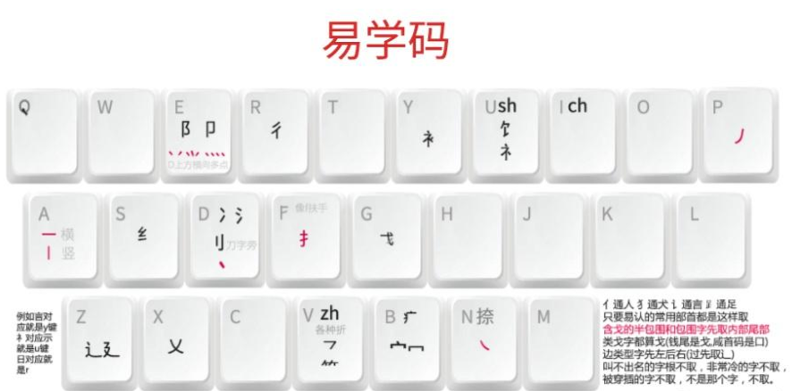 是不是立刻字根少了很多。易学码基本不用学，你看看就可以直接用。不会的字直接打拼音+oopp就可以查到编码，比如： 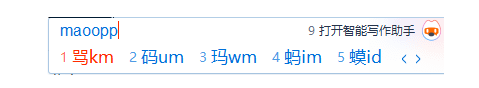 码不知道辅助码是多少，就这样查。输入法直接可以查。 易学码就不多说了。这个简单，适合不想学直接用的人。 下面是详情辅助码编码规则
这里作的真的很详细了。直接看了十几年前的官方文档。 一、基本原理 在汉语中，一种发音有很多同音字。如“tian”这个发音，就有“天、田、添、填、甜、恬、舔、掭、腆……”等，在普通拼音或双拼输入法中，要输入其中的一个字需要选择，有时还要翻页，是比较麻烦的。自然码为了解决这个问题采用了辅助码，引入汉字的偏旁部首发音的声母作为音码的补充部分，较好地解决了音码方案中的重码问题。 自然码在6.0B以后的新版本中采用了新的辅助码，新方案是在原来的辅助形码的基础上进行改造完成，遵照国家语委和国家新闻出版署联合公布的《信息处理用GB13000.1字符集汉字部件规范》（1997年）改进而来。新方案比旧方案更加简单，二义性也更少，而增加的重码并不太多。新的辅助形码方案中采用了最直观的切分方法“切形”，按汉字“形声字”和“会意字”组字的原则。将汉字全部视为由两个部件（半边字）组成，然后分别用这两个字的双拼声母作编码。对于不可拆分的独体字，拆分按照书写的顺序取笔画的读音。 拼音加辅助形码功能可用于全拼、双拼、声形等所有拼音类编码方案： 自然码的辅助形码非常简单，只取两个部分（“部首”和“部件”），一般作为辅助编码时只需输入发音的声母（只有用“GBK切形”查难字时才会用到发音的韵母），因此一般不需要记忆。 但是有些需特殊记忆，比如 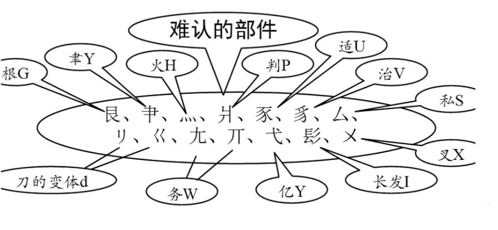 为避免重码过多，其中一些有发音的部件（如“日月目”等）用了特殊编码（也可用普通发音编码，但位置会在后面）。 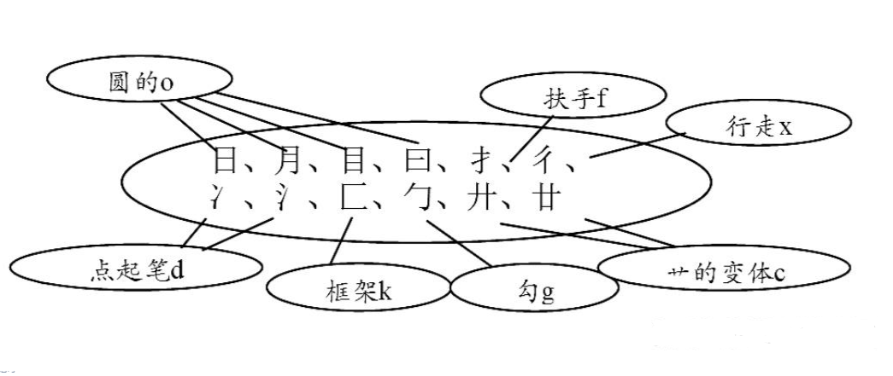 由于汉字中的同音字很多，单纯用拼音输入则有些字需要翻页才能找到，非常不方便。自然码是音形结合码，采用了在拼音码的后面附加辅助形码的办法来减少重码，所以也基本实现了盲打输入，任何汉字都可以用其读音的声母加上读音的韵母再加上辅助码来输入。双拼+辅助码的打法举例
规则：声＋韵＋形 例1．输入“李”字的双拼“li”，然后输入“李”字偏旁“木”读音的声母键【M】，按【空格】送出。 输入“李”字的双拼“li”，然后输入“李”字偏旁“木子”读音的声母键【MZ】，按【空格】送出。 例2．输入“婴”（yy+n“女”）， 按【空格】送出。（为什么先女字旁，自然码会根据字典上的习惯，先取部首，也是为了直观和自然） 输入“婴”（yy+nb“女贝”）， 按【空格】送出。 例3．输入“秀”（xq+h“禾”）， 按【空格】送出。 输入“秀”（xq+hn“禾乃”）， 按【空格】送出。 例4．输入“榕”（rs+j“木”）， 按【空格】送出。 输入“榕”（rs+mr“木容”）， 按【空格】送出。 一般情况打一个辅助码居多，两个辅助码用的比较少。 一个辅助码也叫单辅 https://zhuanlan.zhihu.com/p/633964212 更多举例,复制到浏览器打开字拆分规则
独体字
一般是部首汉字，如：“金木水火土辶皿马皮日月目衣耳”等。独体字全部看成部首，不能进一步拆分出部件，只能由笔画构成。 自然码中的笔画码： ①以横竖起笔的在a键上： “一丨亅レ乛フㄥ” ②以点起笔的在 d 键上：“丶冫氵”【d就是点的意思啦】 ③以撇起笔的在 p 键上：“丿彡”【p就是撇的意思啦】 举例：金【jnp，jn是金的自然码双拼，辅助码p是金的第一笔撇p】有明显部首的汉字
如 “极、版、码、程、想、 福、袋、鳌、游、洪、递”，辅助码就是部首的声母。（注意：部首以新华字典上的为标准，不是以从上到下从左到右的顺序看部首的，比如“架”的部首是“木”） 举例：架【jwm，jw是架的自然码双拼，辅助码m是木的声母m】 说明：如果一个字有明显两个部首，比如“杏”的部首可以是“木”和“口”，所以随意哪个部首当作辅助码都行，也就是输入【xym】或【xyk】两者皆可。不认识或不是整体字部件的汉字
如“录、芈、暨、 释、稽、躅、摭、谧、荔”，这类字的部首或部件可以用首笔画（尾部用末笔画）或能认识的汉字代替。 【比如 躅＝足＋虫 】 所谓象形字其实也就是单字，它们大多会作为其他比较复杂的字的偏旁部首，考虑到自然码用偏旁部首来作为辅码，你自然不能给偏旁拆偏旁，这就会引起悖论了，所以自然码其实规定了三种基本笔画，不过你应该用不到他们，这个笔画很有早些年手机上的笔画输入法，你可能用过，也可能根本没有听说过。 实际上，现在的 iPhone 上依旧留存这种输入法，这种输入法只有五个笔画“横竖撇点（捺）折”，优点是基本不会重码，缺点是不重码的前提是你输入的足够长…… 自然码的三大笔画则是 a 、 d 、 p。 其中 a 代表了一切 横 、 竖 、 折（折就是笔画里的横折、竖折、横撇等）； 其中 d 代表了一切 点 （也包括捺，你懂的）； 其中 p 代表了一切 撇。 你看，有了这个规则，我们对应一个简单字的时候，就输入它的起笔和停笔即可，按照这个规则，那么“马”的辅码就是“折横”也就是“aa”，“金”的辅码就是“撇横”就是“pa”。 对于辅码，其实是分为单辅码和双辅码——无非就是为了更精确罢了，一般情况下你不需要使用两位辅码，因为很有可能第一位辅码字母就已经满足了你的需求。总之，这里我们的例子都是两位完整辅码，是为了方便你理解辅码的意义。 形声字 这类字最常见了，大部分的组词都是这样的字，它们由两部分组成，然后一部分表示声音，一部分表示意思，比如说 “想”，你看，你读它的时候发的是“相”的音，而理解的却是“心”的意思，对吧？ 对于这一类的字，它们的偏旁的声母就是辅码了。 显然，“想”的部首是“心”，剩下的部分是“相”，那么“想”的辅码就是“xx”； 再来个例子，“袋”的部首是“衣”，剩下部分是“代”，那么“袋”的辅码就是“yd”。会意字和转意字
说白了，这些字和上文中的形声字一样，很容易能被拆分成两部分，但区别在于你可能并不能立即就判断出来哪个部分应该是这个字的偏旁——“思、杏、如”。 你说它“田字头”也对，说它“心字底”也对——其实，这些字本来就是可以看作有两个偏旁的。所以说，这时候，拆偏旁的规则就有点郁闷了——总之，这里你不用纠结，按照直觉随便选一个就行，所以，“思”就有两个辅码“tx”和“xt”——这都是被接受的。 同样的“如”的辅码可以是“nk”，也可以是“kn”，“杏”的辅码是“mk”，也可以是“km”。 这个需要码表支持，如果不支持，就不行。非整体合成字
这些字你往往一眼就能把它们拆成好几个部分，或者说，拆出来的部分并不是常用的小字，这就比较尴尬了——我根本不认识这个字，要怎么读出声母呢？ 对于这些字，我们用首尾笔画和小部件来辅码，比如“录”这个字，它一眼就能看出由“彐”和“水”组成，那么“彐”就不是大多数人都能读出来的了，我们则取它的起笔“横折”，也就是“a”，那么“录”的辅码就是“au”了。 再比如“释”，它的偏旁不是“米”，另外半个也不知道是个啥，那么我们可以取“撇”和“丰”，它的辅码就是“pf”。 “谧”则有三部分，那么取偏旁和另外两部分的末尾部分也就是那个“皿”，就是“ym”。部首隐蔽的字
这一部分的字就是那些你一眼不太容易找到部首的字，那么你可以尝试字中明显的小部分，比如“鹰”是“gn”，但也可以是“n”； “颖”可以是“hy”，也可以是“yh”——“页”和“禾”在这里就不会区分的很详细避免你用起来会混淆——实际上就是混着来的，不怕你用错。偏旁部首的命名
说完了字，我们来说说看部首到底怎么命名，因为不同的地方由于各种原因，对于偏旁部首的命名是不同的，所以自然码也只能取称呼比较广泛的一种来命名，但我相信你总能猜出其他的称呼，毕竟这些东西万变不离其宗的。 日、月、曰、目 它们都是圆的，所以用 o 表示； 扌这是“扶手旁”而非“提手旁”——实际上 t 也是可以的但会和“提土旁”重码； 彳取“行人”的意思所以用 x 表示——实际上“双人旁”也是可以的但会和“水”重码； 亠 叫“文字头”； 灬 不称为“四点底”而取“火”的变体，所以是 h。 说了这么多，总结规则，自然码取码主要优先取大字
自然码辅助码核心规则，直观大字优先 1，比如“碧”优先取大字“石”，而不是取“王”或“口” 2，比如“墨”优先取尾部“土”，而不是先取“黑”，自然码就是有一部分字是先取尾部的，但是大部分字是先取头部。这里为什么不大字优先了？因为自然吗一般还以字典里的常用部首为优先。也是为了更直观。 提一下，易学码，上面“碧”就是先取“王”它基本是按照顺序取，取不了才取尾部。 辅助码实践感觉，一般用一位多，用两位少。除非你专业练打字。 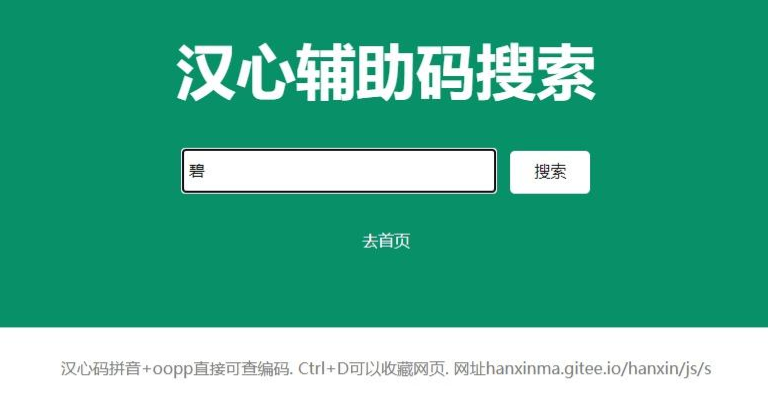 查询自然码辅助码编码 如果自然码辅助码，不知道怎么打，可以用这个网站查自然码辅助码下载
自然码辅助码下载 这里有很多版本的辅助码，可以下载使用。这个码表很全。基本上市面上有的这里都有了。 有纯净一点的，也有里面有很多兼容码的版本的，辅助码基本都是第三方爱好者在维护。辅助码怎么使用和安装
一般都是打开输入法设置里的自定义短语 然后把你下载到的码复制到短语里即可。 这个是手心输入法安装自然码辅助码的方法
这个是手心输入法安装自然码辅助码的方法

自然音形输入法的介绍
音形和辅助码的区别 音形基本等同辅助码 但音形输入法软件一般指的是，不管在长的字词都只打4个键。有点类似五笔。 比如，你好nihk 记事本jsbf 多于四字的，都是取，前3个字的首字母和最后一个字的首字母。 然后自然音形输入法是小词库。也就是说很多词是没有的，你只能打单字。而且还是4键上屏。也就是说你打4个键，（不过这个也可以不启用）。只要没重码就会自动上屏。有点像五笔。这个就和小鹤音形是一样的。不过一般刚学的人不太用的惯。 自然音形输入法怎么安装 网盘里下载安装后即可使用 自然音形的好处是，你打熟了，会很快，容易形成盲打。 坏处是前期你很不适应。不追求绝对的速度，可以直接挂辅助码用即可。 自然码你的选择余地很大。什么样的辅助码都可以用。也可以不用。但是一般建议还是加一个辅助码。他们都说。双拼不用辅助码是没有灵魂的。你感觉辅助码难学，可以用自然易学码，这个基本不用学，直接用。即可。你如果感觉取大字，会导致有些大字你不认识。你也可以用取小字的自然汉心码。 看到这了，你还是感觉我不想学双拼，那你也可以用普通拼音加易学码辅助码，来提速。 所以拼音打字，真的可以媲美五笔了。不用选字的。只是以前我们不知道有辅助码这个东西。自然码辅助码下载
http://yaoxiazai.ysepan.com/ 复制到浏览器打开，然后找里面的自然码下载文件夹手机辅助码安装看这里
复制到浏览器打开 https://www.ixigua.com/7231103593359605812 自然码辅助码下载 这里有很多版本的辅助码，可以下载使用。这个码表很全。基本上市面上有的这里都有了。 有纯净一点的，也有里面有很多兼容码的版本的，辅助码基本都是第三方爱好者在维护。电脑版辅助码怎么使用和安装
https://www.ixigua.com/7231104568191353344?logTag=770a29f1485f9699eece 复制浏览器打开 看视频 一般都是打开输入法设置里的自定义短语 然后把你下载到的码复制到短语里即可。
这个是手心输入法安装自然码辅助码的方法
自然音形输入法的介绍
音形和辅助码的区别 音形基本等同辅助码 但音形输入法软件一般指的是，不管在长的字词都只打4个键。有点类似五笔。 比如，你好nihk 记事本jsbf 多于四字的，都是取，前3个字的首字母和最后一个字的首字母。 然后自然音形输入法是小词库。也就是说很多词是没有的，你只能打单字。而且还是4键上屏。也就是说你打4个键，（不过这个也可以不启用）。只要没重码就会自动上屏。有点像五笔。这个就和小鹤音形是一样的。不过一般刚学的人不太用的惯。 自然音形输入法怎么安装 网盘里下载安装后即可使用 自然音形的好处是，你打熟了，会很快，容易形成盲打。 坏处是前期你很不适应。不追求绝对的速度，可以直接挂辅助码用即可。 自然码你的选择余地很大。什么样的辅助码都可以用。也可以不用。但是一般建议还是加一个辅助码。他们都说。双拼不用辅助码是没有灵魂的。你感觉辅助码难学，可以用自然易学码，这个基本不用学，直接用。即可。你如果感觉取大字，会导致有些大字你不认识。你也可以用取小字的自然汉心码。 看到这了，你还是感觉我不想学双拼，那你也可以用普通拼音加易学码辅助码，来提速。 所以拼音打字，真的可以媲美五笔了。不用选字的。只是以前我们不知道有辅助码这个东西。自然音形安装下载
http://yaoxiazai.ysepan.com/ 复制到浏览器打开 在双拼系列文件夹下 多多版输入法里 自然音形,就是,下载安装后直接可以用右列